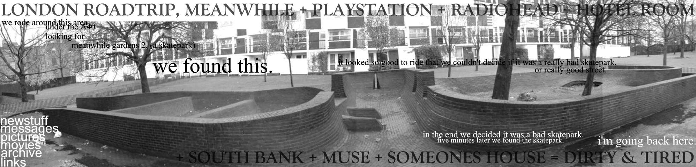
| this is meanwhile 2. i think
its really for skateboarders. it's tight to get around and there's not really a great deal you can do on it, but it was fun for half an hour. i like the way the photos have come out. the graffiti makes nice colours and the sun was making it light so it was easy to take photos. another good thing about here is that it's under cover and lit and free, so if you live close you could be down here all the time.
|
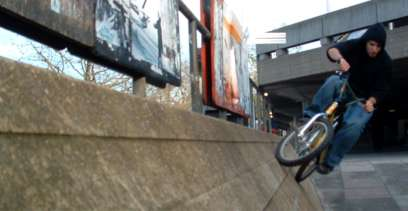
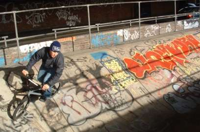
| more meanwhile. on the left is a
little wall ride more on that later. we were travelling very light as we had a couple of concerts to go to, so that made riding round london a bit better but it was still tiring |
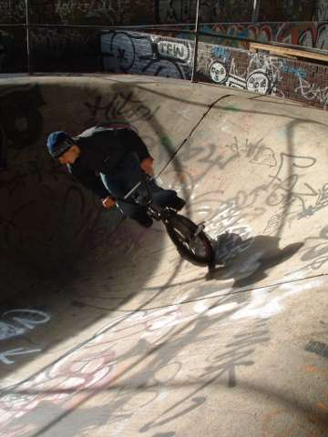
| tim on one of the rails at
meanwhile. after riding dodgy rails as the station, this was really easy there's a couple more pictures on the left. action shots. classic. |
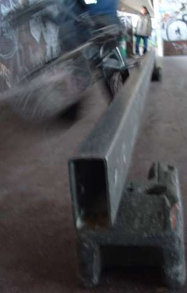
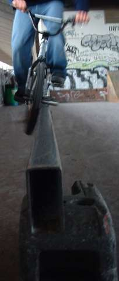
| a couple of nice pictures that tim took. i was trying to table out of this thing, but it was so awkward to ride. it might have been nicer if there were hips to air out of or something but we couldn't figure out a good way to flow in it. it's probably easier if you know how. in the end we just rolled from side to side which was fun but not exactly challenging. |
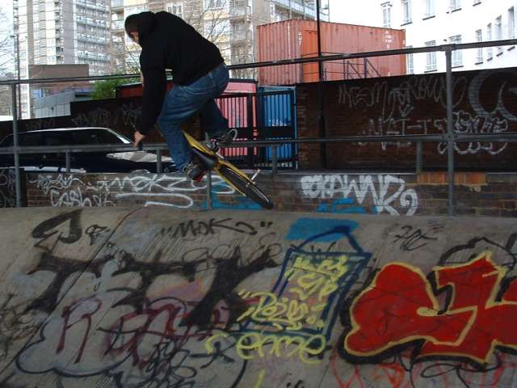
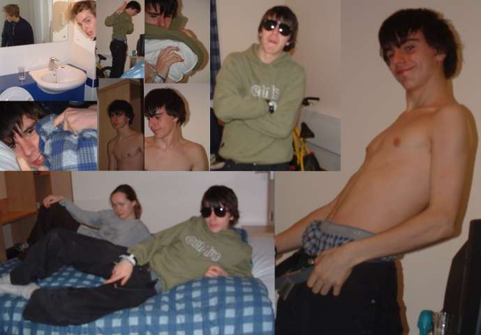
| this is the view from the hotel window. on
the left are some funny pictures of people in the hotel when we got back
from radiohead. they were totally amazing. i've seen them three times
and this was probably the best. we got right up to the front. about 3
rows away, but then people started to really crush us. it was so hot in
there
that my clothes were still wet when i got home. and i stank so bad. i
guess i was the lucky one though as i had the next day off. seb was up
at 7 to get to school. he came
straight from school to the gig and then went straight to school the
next day, then came to another gig the next night and then went to
school the next day so that's nearly
three days without going home - and the same without a shower. after
being wedged against smelly sweaty people. nice. he was travelling
light. he dumped his bag at
liverpool street station and all he took was a toothbrush and deodorant
(which he left behind). i am glad i don't sit next to him at school. anyway the next day the rest of us slept in so we decided not to go to playstation cos we had missed most of the session, so we went to southbank for a bit. that was fun, but street doesn't ever flow too good. becky got some good pictures which follow. then tim went home and me and becky got some noodles. i ate all mine but she couldn't manage hers so i saved them and ate them later while watching some rubbish thrash metal band who were on before elbow who were on before muse. then we walked to meanwhile 2 but by the time we go there it was time to go home for becky so we walked back to paddington with my bike and i put her on the train with becky. my bike that is. they both got back to reading safely, while i went to queue up for muse. i was in that queue for a long time. |
| more on
that story later. meanwhile here's tim doing a fakie at southbank. nice
silhouette picture by becky. you can see all the building nicely. other
pictures on the right include some wall rides, high and low (i couldn't
do it, and my excuse was my pegs)
and some pictures of the stone circle, which i could do. i tried an xup out of it but i didn't get too far as you can see. all fun though. anyway on with the storys. i was so close to the front of the muse queue that it was a bit unreal. i read my book for about an hour and then talked to the people next to me. i was in the standing queue even though our tickets were for seating, because we were going to try and get into standing but it didn't work. oh and seb took hours to come because of the tube, but eventually we got into the venue. task 1 was to get into standing . we tried going through all the official means but no-one would let us through.... |
|
|
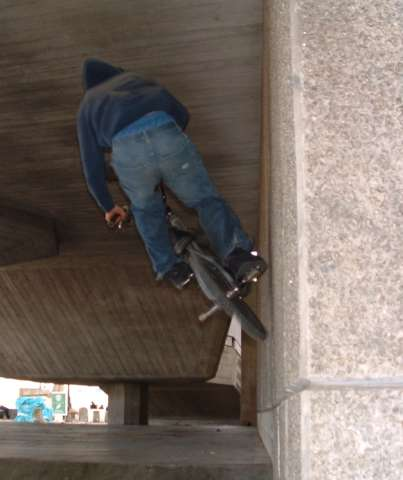
| it was also quite fun to give the flyers back to the
people who were handing them out or to offer them to people at about head height which made it really hard for them to take them off you. when we ran out of muse flyers we went to get some of the wembley ones. i took status quo and seb took the doors. he started offering people the flyers while shouting "old school grunge hip hop metal" which made people take them. what worked the best though was shouting "free darkness tickets". that shifted a lot. eventually we tired of this game, and with a final shower of flyers we left the food selling places and concentrated on trying to get into standing again. we went right down to the end of seating near the standing area. there was a group of people looking at the gate, which we had already found out was easy to open, but there was security everywhere. we were just considering if we would get thrown out for jumping the barrier when we were asked to take our seats. we took the nearest ones we could find, which happened to be next a shift looking guy. he sat there watching security for 5-10 mins and then disappeared between the seating and the wall. he then reappeared 2 seconds later in the standing area. exciting. so seb did the same and got away with it. by this time the security were being lax and not even looking. so i slipped down the gap, and just as i disappeared security looked round.... |
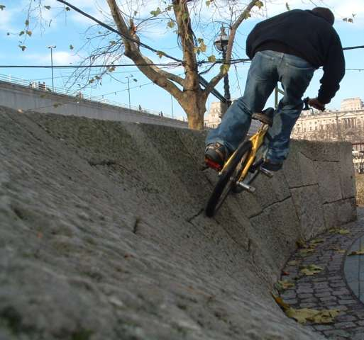
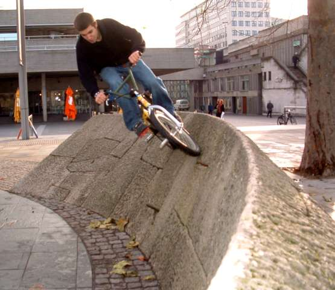
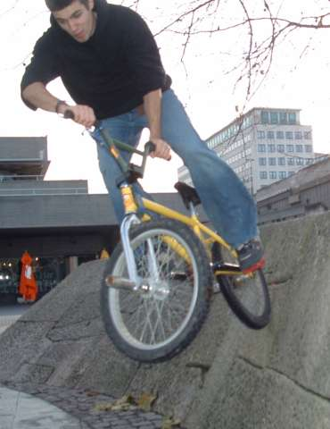
| i was grabbed and pulled out
of the room. he said any other guard would have kicked me out and this time to stay in my seat. that was a real buzz. so seb very kindly came out of standing and we found some new seats right by that stage off to the left. muse were really good too. their stuff works really well live. that's basically it i think. we went to |
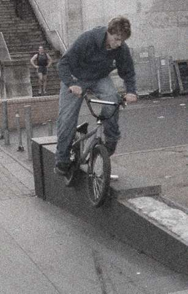
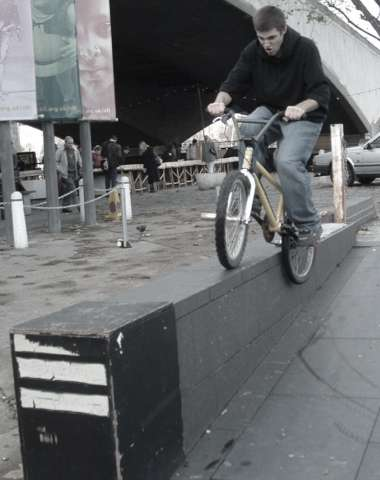
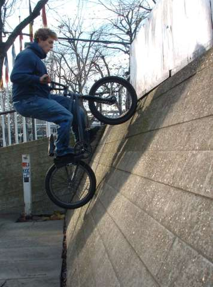
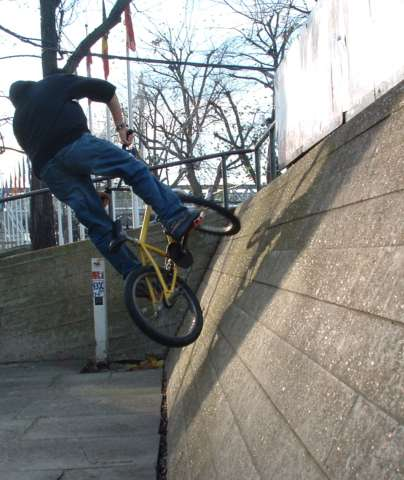
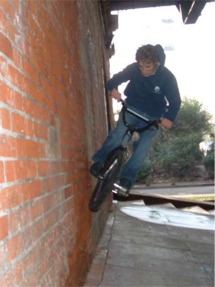